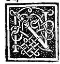

CHAPTER XXIII¶
How, Out of Reverence for Our Salvation, the Said Effects Conclude

It does not seem fitting to me, Most Exalted Duke, to extend my discourse at present to any more of its infinite effects—for paper would not suffice for the ink needed to express them all! Rather, we have chosen only these thirteen from among the rest out of reverence for the Twelvefold Company (la turba duodena, the Twelve Apostles) and its Most Holy Head, our Redeemer Christ Jesus.
For having bestowed upon this proportion the name Divine, it is fitting that its effects should likewise come to a close with the number of our salvation: namely, the Thirteen Articles [of the Creed] and the Twelve Apostles together with our Savior—toward which sacred college I perceive Your Ducal Highness bears a singular devotion, having caused it to be arrayed in the aforesaid most sacred Temple of the Graces [Santa Maria delle Grazie] by our aforesaid Leonardo with his graceful brush [The Last Supper].
Nevertheless, in the following chapters we shall not cease to adduce still further effects as occasion requires, inasmuch as—as will be told—without this proportion it is impossible either to form or to imagine the harmony and worthy agreement among themselves of all the Five Regular Bodies and their Dependent Bodies, for the sake of which we have set forth the thirteen effects already stated, so that what follows from them may be rendered all the clearer.